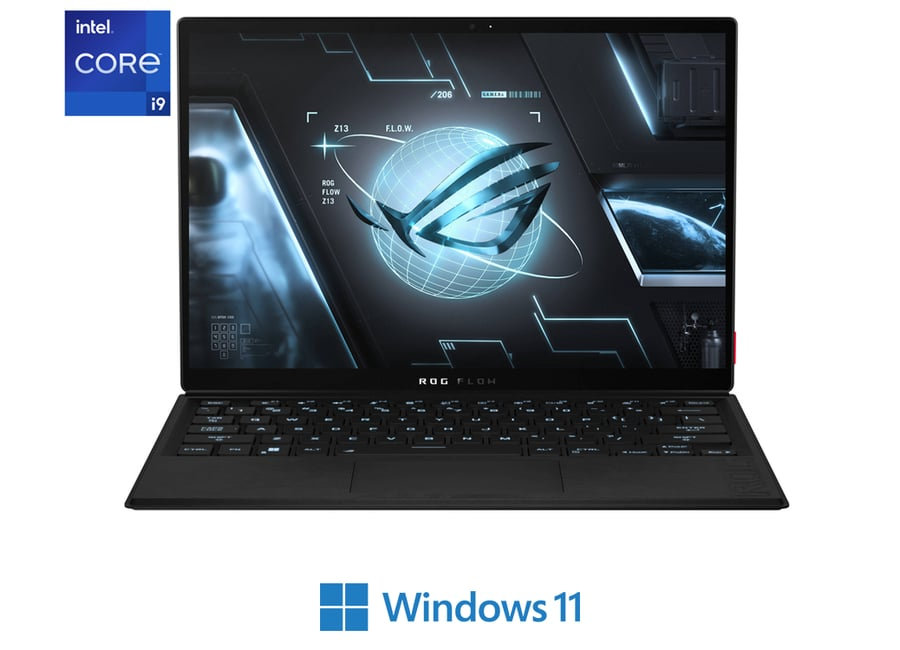
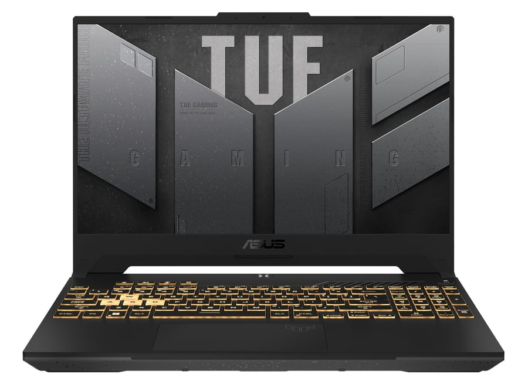
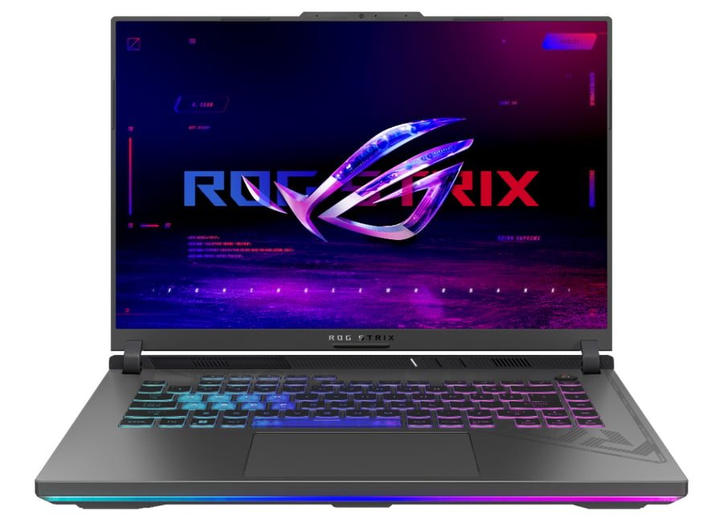
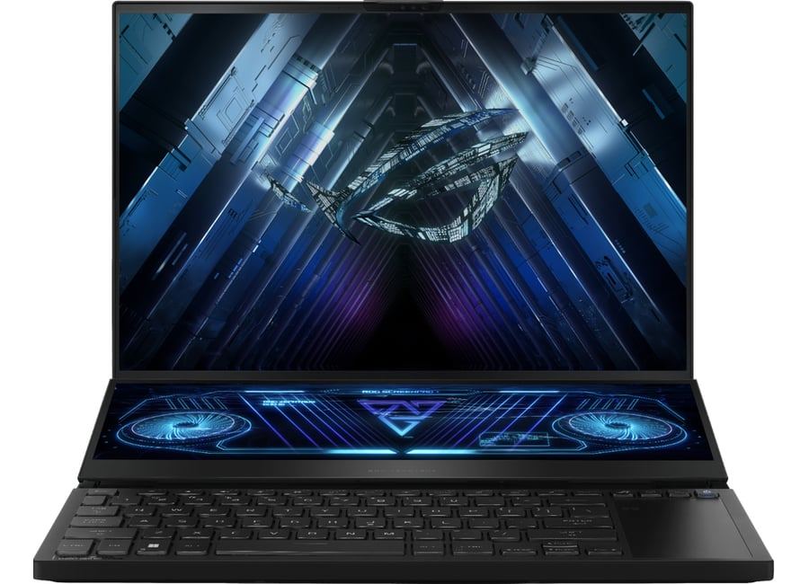

პროცესორი პროცესორის მწარმოებელი: Intel პროცესორის/ჩიპსეტის ტიპი : Intel Core i9 პროცესორის მოდელი: 12900H ბირთვების რაოდენობა: 14 პროცესორის ნაკადი: 20 პროცესორის სიჩქარე: 3800 მჰც პროცესორის მაქსიმალური სიჩქარე : 5000 მჰც ინტეგრირებული გრაფიკული ბარათი: დიახ გრაფიკული პროცესორი: Intel Iris Xe Graphics ლითოგრაფია: 7nm ქეშ-მეხსიერება: 24MB SmartCahe მეხსიერება : RAM მოცულობა: 16 GB RAM მეხსიერების ტიპი: DDR5 RAM მეხსიერების სიჩქარე: 4800 MHz  ფასი:4200.00 ლარი
ეკრანი დიაგონალი: 15.6" გარჩევადობა: 1920 x 1080 ეკრანის/პანელის ტიპი : IPS ეკრანის ფორმატი: 16 : 9 განათება: LED სიკაშკაშე: 250 კდ/მ² განახლების სიხშირე: 144 Hz პროცესორის მწარმოებელი: Intel Intel პროცესორის/ჩიპსეტის ტიპი : Intel Core i5 Intel Core i5 პროცესორის მოდელი: 12500H ბირთვების რაოდენობა: 12 პროცესორის ნაკადი: 16 პროცესორის სიჩქარე: 3300 მჰც პროცესორის მაქსიმალური სიჩქარე : 4500 MHz ინტეგრირებული გრაფიკული ბარათი: დიახ გრაფიკული პროცესორი: Intel Iris Xe  ფასი: 2800 ლარი
პროცესორი პროცესორის მწარმოებელი: Intel პროცესორის/ჩიპსეტის ტიპი : Intel Core i5 პროცესორის მოდელი: 13450HX ბირთვების რაოდენობა: 10 პროცესორის ნაკადი: 16 პროცესორის სიჩქარე: 3400 MHz პროცესორის მაქსიმალური სიჩქარე : 4600 Mhz ინტეგრირებული გრაფიკული ბარათი: დიახ გრაფიკული პროცესორი: Intel UHD Graphics ლითოგრაფია: 7nm ქეშ-მეხსიერება: 20MB Smart Cache მეხსიერება RAM მოცულობა: 16 GB RAM მეხსიერების ტიპი: DDR5 SO-DIMM RAM მეხსიერების სიჩქარე: 4800 MHz
 ფასი: 3200 ლარიპროცესორი პროცესორის მწარმოებელი: AMD პროცესორის/ჩიპსეტის ტიპი : AMD Ryzen 9 პროცესორის მოდელი: 7945HX ბირთვების რაოდენობა: 16 პროცესორის ნაკადი: 32 პროცესორის სიჩქარე: 2500 მჰც პროცესორის მაქსიმალური სიჩქარე : 5400 MHz ინტეგრირებული გრაფიკული ბარათი: დიახ გრაფიკული პროცესორი: AMD Radeon 610M ლითოგრაფია: 5nm ქეშ-მეხსიერება: 64MB მეხსიერება RAM მოცულობა: 32 GB RAM მეხსიერების ტიპი: DDR5 SO-DIMM RAM მეხსიერების სიჩქარე: 4800 MHz
 ფასი: 8500 ლარი